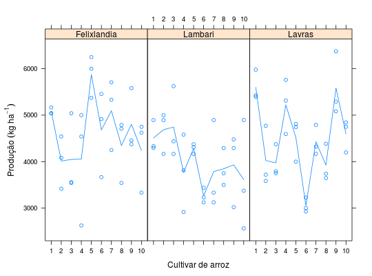

Experimentos para avaliar a produção de grãos de cultivares de arroz, conduzidos em três locais do Estado de Minas Gerais (Lambari, Lavras e Felixlândia) em delineamento inteiramente casualizado.
Um data.frame com 90 observações e 4 variáveis, em que
cultlocalreptprodRAMALHO et al. (2005), Exercício 8.1, pág. 132.
data(RamalhoEx8.1)#> Warning: data set ‘RamalhoEx8.1’ not foundstr(RamalhoEx8.1)#> 'data.frame': 90 obs. of 4 variables: #> $ cult : Factor w/ 10 levels "1","2","3","4",..: 1 2 3 4 5 6 7 8 9 10 ... #> $ local: Factor w/ 3 levels "Felixlandia",..: 2 2 2 2 2 2 2 2 2 2 ... #> $ rept : int 1 1 1 1 1 1 1 1 1 1 ... #> $ prod : int 4895 4166 5624 4582 4311 3437 4895 3499 3020 3374 ...with(RamalhoEx8.1, tapply(prod, list(cult = cult, local = local), FUN = mean))#> local #> cult Felixlandia Lambari Lavras #> 1 5082.667 4507.000 5600.667 #> 2 4013.333 4686.667 4024.333 #> 3 4046.667 4742.333 3972.333 #> 4 4055.000 3769.667 5222.333 #> 5 5874.000 4283.667 4517.667 #> 6 4679.667 3263.333 3052.000 #> 7 5096.000 3783.667 4427.333 #> 8 4346.667 3846.000 3923.667 #> 9 4804.667 3929.667 5583.333 #> 10 4235.333 3610.333 4597.333aggregate(prod ~ cult + local, data = RamalhoEx8.1, FUN = function(x) { c(mean = mean(x), var = var(x)) })#> cult local prod.mean prod.var #> 1 1 Felixlandia 5082.667 5208.333 #> 2 2 Felixlandia 4013.333 320046.333 #> 3 3 Felixlandia 4046.667 741596.333 #> 4 4 Felixlandia 4055.000 1586116.000 #> 5 5 Felixlandia 5874.000 203125.000 #> 6 6 Felixlandia 4679.667 843810.333 #> 7 7 Felixlandia 5096.000 573213.000 #> 8 8 Felixlandia 4346.667 488546.333 #> 9 9 Felixlandia 4804.667 454949.333 #> 10 10 Felixlandia 4235.333 614560.333 #> 11 1 Lambari 4507.000 113269.000 #> 12 2 Lambari 4686.667 206024.333 #> 13 3 Lambari 4742.333 601362.333 #> 14 4 Lambari 3769.667 695170.333 #> 15 5 Lambari 4283.667 11376.333 #> 16 6 Lambari 3263.333 25376.333 #> 17 7 Lambari 3783.667 937112.333 #> 18 8 Lambari 3846.000 163477.000 #> 19 9 Lambari 3929.667 629362.333 #> 20 10 Lambari 3610.333 1402612.333 #> 21 1 Lavras 5600.667 107592.333 #> 22 2 Lavras 4024.333 422757.333 #> 23 3 Lavras 3972.333 122046.333 #> 24 4 Lavras 5222.333 346054.333 #> 25 5 Lavras 4517.667 202316.333 #> 26 6 Lavras 3052.000 24829.000 #> 27 7 Lavras 4427.333 105820.333 #> 28 8 Lavras 3923.667 161830.333 #> 29 9 Lavras 5583.333 480972.333 #> 30 10 Lavras 4597.333 121809.333library(lattice) xyplot(prod ~ cult | local, data = RamalhoEx8.1, as.table = TRUE, layout = c(NA, 1), type = c("p", "a"), xlab = "Cultivar de arroz", ylab = expression("Produção"~(kg~ha^{-1})))# Ordenar cultivares pela média dentro de cada local. a <- by(data = RamalhoEx8.1, INDICES = RamalhoEx8.1$local, FUN = function(d) { with(d, reorder(interaction(cult, local, drop = TRUE), prod)) }) a <- levels(unlist(a)); a#> [1] "2.Felixlandia" "3.Felixlandia" "4.Felixlandia" "10.Felixlandia" #> [5] "8.Felixlandia" "6.Felixlandia" "9.Felixlandia" "1.Felixlandia" #> [9] "7.Felixlandia" "5.Felixlandia" "6.Lambari" "10.Lambari" #> [13] "4.Lambari" "7.Lambari" "8.Lambari" "9.Lambari" #> [17] "5.Lambari" "1.Lambari" "2.Lambari" "3.Lambari" #> [21] "6.Lavras" "8.Lavras" "3.Lavras" "2.Lavras" #> [25] "7.Lavras" "5.Lavras" "10.Lavras" "4.Lavras" #> [29] "9.Lavras" "1.Lavras"RamalhoEx8.1 <- transform(RamalhoEx8.1, cult.loc = factor(interaction(cult, local), levels = a)) xyplot(prod ~ cult.loc | local, data = RamalhoEx8.1, as.table = TRUE, layout = c(NA, 1), type = c("p", "a"), scales = list(x = "free"), xlab = "Cultivar de arroz (ordenadas por local)", ylab = expression("Produção"~(kg~ha^{-1})), xscale.components = function(...) { ans <- xscale.components.default(...) ans$bottom$labels$labels <- gsub(x = ans$bottom$labels$labels, pattern = "\\..*$", replacement = "") return(ans) })